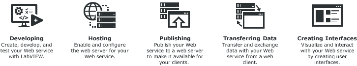

A web client can exchange data with a remote LabVIEW stand-alone application over a network through LabVIEW Web services. A Web service consists of VIs and other files running on a server that respond to HTTP requests from clients.
|
Note��LabVIEW Web services are available only in the LabVIEW Full Development System and the LabVIEW Professional Development System. |
Web services are useful in the following situations:
Do not use Web services in the following situations:
The following figure shows the common processes involved in LabVIEW Web service applications.

Web services enable communication between LabVIEW applications and web clients. Perform the following actions to develop a Web service:
LabVIEW uses the NI Web Server or Application Web Server to host Web services on the network. The web server support for Web services differs depending on how you publish or run Web services.
|
Note��The NI Web Server supports Windows (64-bit) only. The Application Web Server supports both Windows (32-bit and 64-bit) and RT targets. |
You need to enable and configure the web servers before using them to host Web services. You can also establish secure communication between Web clients and LabVIEW Web services.
From the project, you can perform the following actions to publish the Web service so that it can run without depending on the LabVIEW Development System:
A Web service starts and stops running under different conditions, depending on how you publish it to the host server.
A web client, such as a browser, exchanges data with a Web service by sending an HTTP request to a specific URL. LabVIEW maps a URL to each HTTP method VI, so the specific URL that the client uses determines which HTTP method VI receives the HTTP request. The request might contain values to assign to specific parameters in the HTTP method VI. After each request, the HTTP method VI can process those values and return a response. The Web service returns data to the web client in a particular format that you configure, such as JSON.
Supported web clients include any HTTP-enabled platform, such as standard web browsers, HTML forms, third-party software, and VIs that use the�HTTP Client�palette.
You can implement communication between any Windows or Embedded LabVIEW application and a Web Service using standard inter-process communication methods. For example, you can use the Network Streams functions to locally transfer data from a LabVIEW application to a Web Service.
In a simple example, a web client might submit an HTTP request that contains two numbers to an HTTP method VI that calculates and returns the sum.
Transferring Data between the Web Service and Clients
If you want to create user interfaces to visualize and interact data from Web services through a web browser, you can integrate WebVIs into Web services. WebVIs are specialized VIs that generate HTML, JavaScript, and CSS files after you build a web application in LabVIEW NXG. WebVIs can communicate data with Web services through HTTP method and display the data.